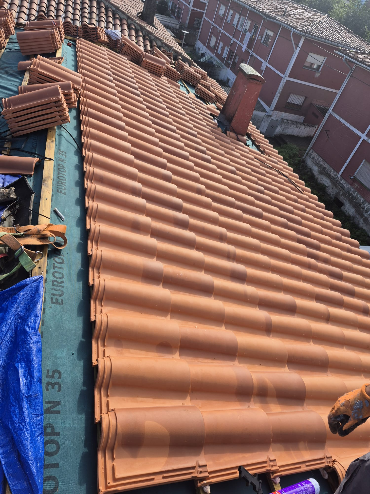
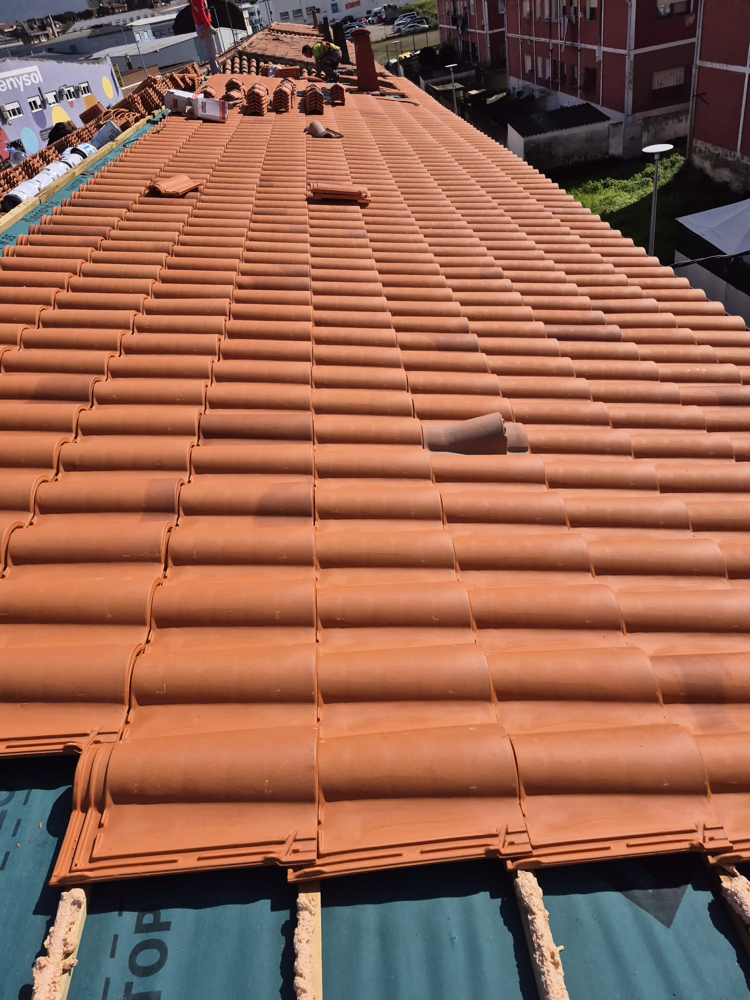
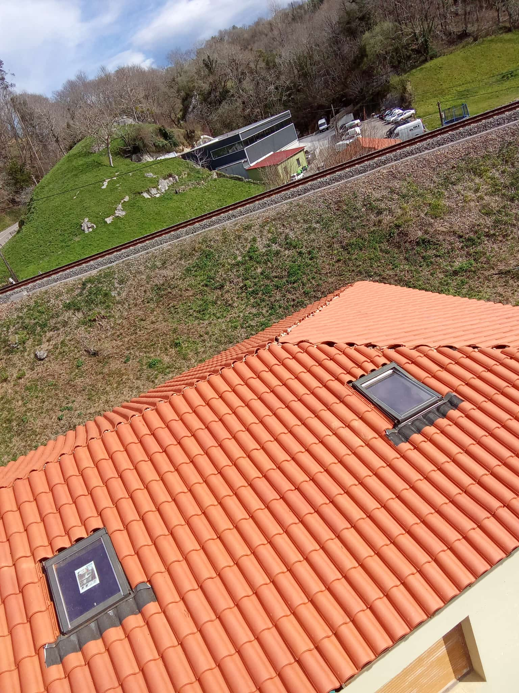
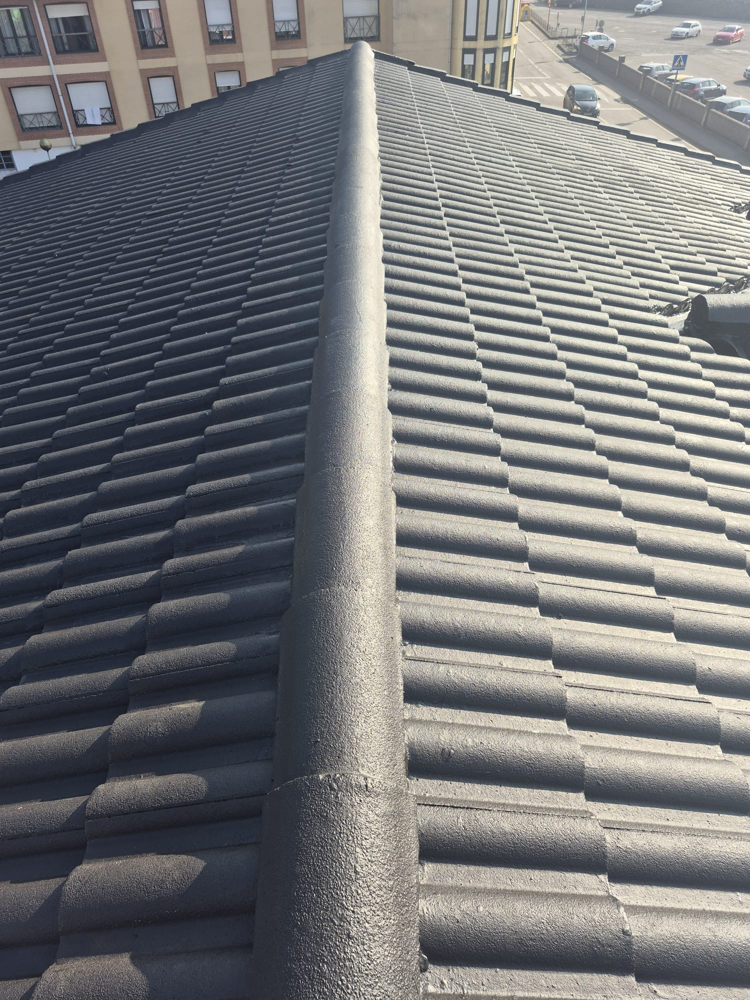
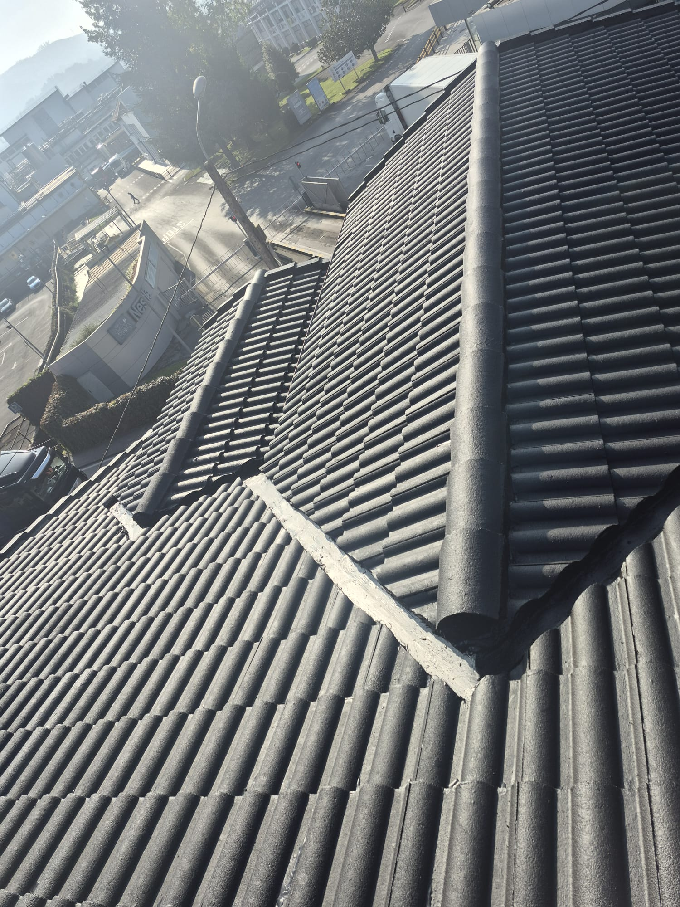

Profesional con más de 10 años de experiencia en instalación, reparación y mantenimiento de tejados, canalones e impermeabilizaciones. Servicio rápido, económico y garantizado en Cantabria.
Llamar ahora: 643 687 809 Presupuesto gratuito y sin compromiso
Instalación de tejado cerámico con sistema impermeable.

Colocación de teja cerámica en cubierta completa.

Instalación de ventanas de tejado y remates.

Colocación de pizarra natural en cubierta inclinada.

Reforma completa de tejado en entorno urbano.
Presupuesto gratuito y sin compromiso: